Local government / AI data architecture / Civic Evidence Lab
Vector Search vs. Knowledge Graphs: Where Microsoft Fabric Graph Fits

Records, radar, maps, and routes: making sense of AI data architecture
One of the most confused topics in AI is the difference between a vector database and a knowledge graph. The terms are often used as if they describe competing versions of the same technology. They do not.
A vector database finds information that is similar in meaning. A knowledge graph defines what entities mean and how they are connected. A relational database preserves authoritative records and transactions. Microsoft Fabric Graph provides an engine for following complex paths and patterns across connected data in OneLake.
For local government, picture a Civic Evidence Lab: a lamplit survey desk overlooking city hall, with one water-main incident under examination. A file cabinet is the city's memory. A brass scanner is its listening signal. A sealed charter and street atlas are its shared legend. A compass and traveling light represent the journey through connected records. These objects recur throughout the illustrations because the instruments work together, but their findings are not interchangeable.
Think of government data as a municipal information city
Every city has records offices, detection systems, official maps, and route-planning tools. Each serves a different purpose. Government data architecture works the same way. In our evidence lab, those citywide responsibilities become four distinct instruments:
The relational database is the records office. It stores official permits, parcels, inspections, assets, payments, cases, and work orders under known identifiers.
The vector database is the similarity radar. It detects documents, reports, images, or complaints that are close in meaning, even when they use different words.
The knowledge graph is the official map and legend. It identifies the important things in the city, defines what they mean, and describes how they are allowed to relate.
Microsoft Fabric Graph is the citywide route engine. It follows paths through connected OneLake data to find relationships and patterns that may be difficult to uncover with conventional joins.
Relational tells us what was recorded. Vector tells us what appears similar. A knowledge graph tells us what things mean and how they relate. Fabric Graph lets us follow those relationships at scale.
The records office: relational databases
A records office is designed around exactness. Every permit has a permit number. Every parcel has a parcel identifier. Every inspection belongs to a known case, property, asset, or application.
That is the role of a relational database. Information is organized into tables with rows, columns, primary keys, foreign keys, constraints, and transactions. The database protects the integrity of the official record.

A relational database is the right tool for questions such as:
- Which permits are overdue?
- Which inspections failed this month?
- What open work orders belong to water asset 481?
- How much revenue was collected by fund and month?
For developers, this is the transactional layer: SQL tables, Dataverse tables, keys, relationships, constraints, joins, aggregations, and ACID transactions.
The introduction of AI does not make this layer obsolete. Permits, payments, inspections, case statuses, and asset records still need an authoritative system of record.
The similarity radar: vector databases
Residents rarely describe the same problem using the same words. One resident might report “water bubbling through the pavement.” Another might write “standing water near the curb.” A public works employee might classify both as a possible underground main break.
A keyword search may miss that connection. A vector database is designed to find it.

Documents, emails, chat messages, images, audio, service requests, and other content can be converted into numerical representations called embeddings. When someone submits a query, the system creates an embedding for that query and looks for nearby vectors.
A vector database or vector-enabled search service is useful for questions such as:
- Which previous complaints sound like this report?
- Which policies discuss a concept similar to this question?
- Which plan sheets resemble this uploaded image?
- Which knowledge-base articles are most relevant to this request?
For developers, the typical pattern is:
Content
→ chunking
→ embedding model
→ vector index
→ query embedding
→ nearest-neighbor retrieval
→ metadata and security filtering
→ grounded AI responseMetadata and security filtering must be applied according to the retrieval service's supported behavior and the application's authorization design. An embedding is not an access-control mechanism.
Vector similarity is useful evidence, but it is not an authoritative relationship. Two complaints may be semantically similar without referring to the same property, asset, incident, or responsible party.
That distinction matters. The similarity radar can say, “These appear related.” It cannot independently declare, “These are officially connected.”
The official map and legend: knowledge graphs
A city map does more than place points on a page. Its legend explains what those points represent. It distinguishes a parcel from a building, a public water main from a private service line, and an owner from an occupant.
A knowledge graph serves a similar purpose. It defines important entities, assigns meaning to their relationships, and provides a shared vocabulary across systems and departments.

For example:
(Resident)
└── reported ──▶ (Complaint)
├── located at ──▶ (Address)
│ └── on ──▶ (Parcel)
└── concerns ──▶ (Water Main)
├── owned by ──▶ (Municipality)
└── maintained by ──▶ (Public Works)The relationships are explicit. A resident reported a complaint. The complaint is located at an address. The address is on a parcel. The complaint concerns a water main. The water main is maintained by Public Works.
The knowledge layer can also carry definitions, provenance, and rules:
Definition:
Water Main = buried public infrastructure that carries potable water
Policy rule:
An active leak near a critical facility receives elevated priority
Security rule:
Resident contact information is visible only to authorized roles
Provenance:
Asset ownership came from the municipal asset-management systemRepresenting a rule in a graph is not the same as enforcing it. Authorization, retention, and audit controls still need implementation and testing in the systems that serve the data.
A knowledge graph is useful for questions such as:
- How is this complaint connected to a city-owned asset?
- Which department is responsible for that asset?
- Which policy governs the department's response?
- Which contractor performed work at that location?
- Where did each relationship come from?
For developers, the knowledge graph is the meaning-rich information product. It includes governed entities, typed relationships, shared definitions, provenance, effective dates, and business rules.
The route engine: Microsoft Fabric Graph
An official map becomes more useful when a route engine can navigate it. The engine can follow several streets, evaluate different paths, and identify patterns across the network.
That is where Microsoft Fabric Graph fits.

Fabric Graph maps structured OneLake data into nodes, edges, labels, keys, and properties. It then creates a graph optimized for traversal and pattern matching.
Instead of asking only about one record, an analyst can ask about the path connecting several records:
Complaint
→ located at Parcel
→ near Water Main
→ associated with Work Order
→ assigned to Contractor
→ followed by Inspection
→ governed by DepartmentThis is a conceptual path. In an implementation, define the direction, source, and validation status of every edge. A spatial association such as near is not the same as an authoritative incident-to-asset relationship.
Fabric Graph becomes valuable when the question involves several hops:
- Which water mains are connected to repeated complaints, recent repairs, and failed contractor inspections?
- Which vendors share addresses, officers, payments, or contracts?
- Which facilities depend on an asset that is scheduled for replacement?
- Which identities, devices, applications, and services are within the potential impact path of a security incident?
For developers, Fabric Graph is a labeled property graph capability integrated with Microsoft Fabric and OneLake. It supports graph traversal and pattern matching over connected data without turning the graph into the transactional system of record.
A knowledge graph and Fabric Graph are not the same thing
This is where the terminology often becomes confusing.
A knowledge graph is defined by the meaning carried in the graph. Fabric Graph is an execution capability for modeling and traversing graph-shaped data.

A knowledge graph focuses on meaning:
- What is a resident?
- What is a service location?
- What does “owned by” mean?
- Which system asserted the relationship?
- When was the relationship effective?
- Which policy governs its use?
Fabric Graph focuses on execution:
- Which paths exist?
- How are these entities connected?
- Which patterns repeat across the network?
- What is reachable from this starting point?
- Which dependencies sit downstream?
A Fabric graph can implement or execute part of a knowledge graph, but a collection of nodes and edges does not automatically become a governed knowledge graph. The meaning, definitions, provenance, and ownership still need to be designed.
One water-main incident, four different questions
Consider a resident reporting water bubbling through the pavement. Each part of the municipal information city answers a different question.

The records office asks: Which official asset, complaint, inspection, or work-order records match this identifier or location?
The similarity radar asks: Which previous resident reports, technician notes, photographs, or documents resemble this incident?
The official map and legend ask: What entities are involved, what do those entities mean, and which relationships are considered authoritative?
The route engine asks: What multistep path connects the complaint, parcel, asset, repair history, contractor, inspection result, responsible department, and governing policy?
The developer contract: a match is not yet an edge
Keep the retrieval candidate separate from the relationship assertion. A useful demo shows a similar report remaining a candidate until a governed process resolves its entity identifiers and checks the evidence.
Similarity candidate:
queryReportId: CR-017
candidateReportId: CR-009
retrievalMethod: vector
relationshipStatus: unverified
Validated relationship:
from: CR-017
predicate: concerns
to: WM-481
sourceRecordId: WO-204
validationStatus: verified
validatedByRole: PublicWorksReviewer
effectiveFrom: 2026-10-02
Illustrative application contract, not Fabric Graph API syntax.The second record is justified by reviewed source evidence, not by the similarity score. Your application's actual validation workflow, identity model, and audit trail must supply that evidence.
The visual language matters
When diagrams mix similarity and relationships together, they reinforce the same confusion the architecture is supposed to solve. The symbols should make the difference visible.

- The archive file cabinet represent authoritative relational records: the city's memory.
- The purple radar, floating reports, and waves represent semantic similarity: the city's listening signal.
- The parchment atlas and green labeled connections represent entities and explicit relationships: the city's shared legend.
- Gold seals and shields represent definitions, rules, provenance, and governance.
- The brass compass, magenta traveler, and labeled execution bracket represent Fabric Graph execution: the connected journey.
- A blue source-data rail represents OneLake source data. Blue water in the incident cutaway is a physical water main, not a OneLake diagram.
The line style should also communicate certainty:
━━━━ reported by ━━━━▶ Authoritative relationship
- - - may concern - - -▶ Inferred relationship
···· possible match ····▶ Proposed or unverified relationship
≈≈≈≈ semantic similarity ≈≈≈≈ Similarity, not a factual relationshipThis distinction is critical:
Parcel ━━━ contains ━━━▶ Building
Complaint ≈≈≈ similar to ≈≈≈ ComplaintThe first is an asserted relationship. The second is a similarity result. Similarity should not become an authoritative graph edge unless a governed process validates it.
Do not choose a winner
The wrong architectural question is, “Should we use SQL, a vector database, a knowledge graph, or Fabric Graph?”
The better question is, “Which responsibility does each layer need to perform?”

- Use relational storage for transactions, integrity, exact filtering, and authoritative records.
- Use vector search for semantic retrieval across documents, correspondence, images, and other unstructured content.
- Use a knowledge graph for governed entities, definitions, provenance, typed relationships, and shared meaning.
- Use Microsoft Fabric Graph when the workload depends on deep traversal, path finding, dependencies, network patterns, or repeated many-to-many relationships across OneLake data.
Use them together when an AI assistant or agent must retrieve relevant documents, resolve governed entities, and follow authoritative relationships in the same interaction.
What this means for local government
Local government already manages data this way conceptually. Clerks preserve official records. Departments classify assets and cases. GIS teams maintain maps and locations. Policies define responsibilities. Analysts trace connections across departments, contractors, properties, programs, and funding sources.
Modern AI architecture brings those responsibilities into a more deliberate technical model.
It also introduces important boundaries. A similarity score is not an official fact. A generated relationship needs validation. Every graph edge needs a source. Sensitive resident information still requires role-based access, retention controls, auditability, and an identified business owner.
The goal is not to turn every municipal system into a graph or generate embeddings for every column. The goal is to choose the smallest combination of capabilities that answers the actual question while preserving the integrity of the public record.
The records office preserves the truth. The radar finds what looks related. The map explains what the relationships mean. The route engine follows those relationships across the city.
Once those roles are separated, the difference between relational databases, vector search, knowledge graphs, and Microsoft Fabric Graph becomes much easier to understand.